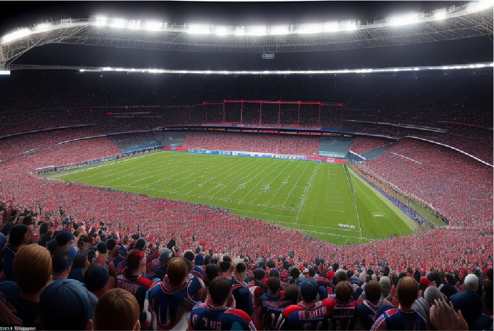

Histórica Remontada: Equipo de Fútbol de la Pequeña Ciudad Logra Acceso a la Liga Profesional
El equipo de fútbol de San Lorenzo logró una histórica remontada para acceder a la liga profesional, revitalizando la pasión por el deporte en la comunidad.
En un emocionante y asombroso giro de los acontecimientos, el equipo de fútbol de la pequeña ciudad de San Lorenzo logró una histórica remontada y el acceso a la liga profesional de fútbol. Este logro sin precedentes ha dejado a la comunidad local en estado de éxtasis y ha reavivado la pasión por el deporte en toda la región.
El partido que selló esta gesta inolvidable tuvo lugar en el estadio de San Lorenzo, donde los locales se enfrentaron al equipo más fuerte y con un historial impresionante de victorias. El marcador comenzó desfavorable para San Lorenzo, con un 0-3 en contra durante el primer tiempo. Los aficionados estaban desanimados, pero los jugadores se negaron a rendirse.
El segundo tiempo vio una actuación increíble del equipo de San Lorenzo. Anotaron cuatro goles consecutivos, igualando el marcador en una actuación llena de determinación y corazón. El estadio retumbaba con los cánticos y vítores de la multitud. Finalmente, en los minutos finales del juego, San Lorenzo anotó un quinto gol, sellando su victoria por 5-3.
El entrenador del equipo, Carlos Mendoza, describió el partido como "una muestra de verdadero espíritu deportivo y la capacidad de superar las adversidades". La ciudad celebró toda la noche, con una fiesta en las calles que incluyó fuegos artificiales y música en vivo.
Este logro no solo ha dado a San Lorenzo acceso a la liga profesional, sino que también ha inspirado a toda una generación de jóvenes a perseguir sus sueños deportivos. Sin duda, esta remontada épica quedará grabada en la memoria de la comunidad por generaciones.